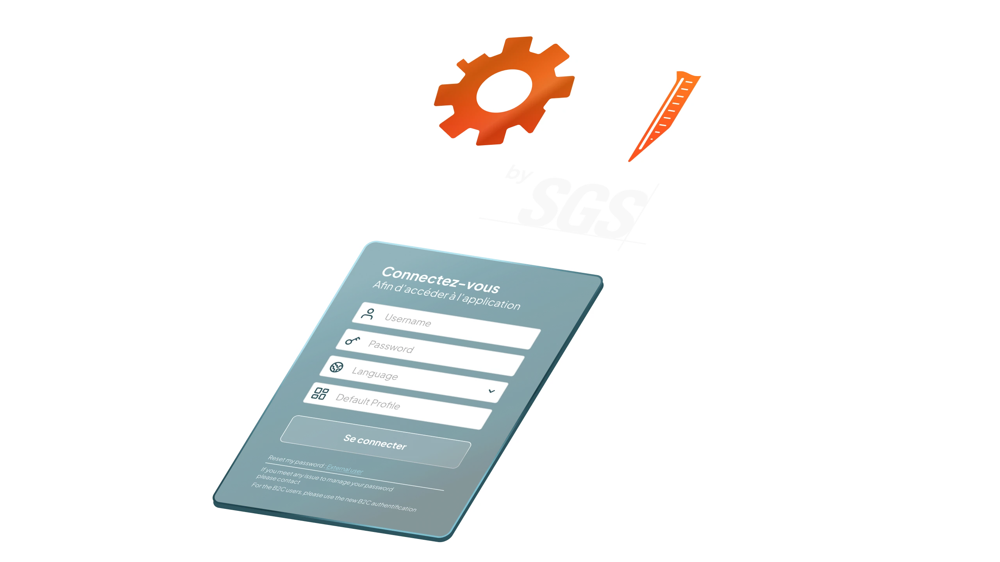
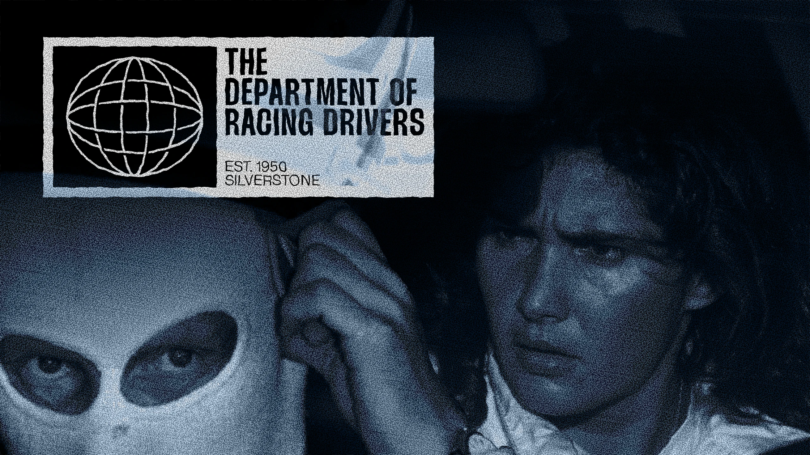
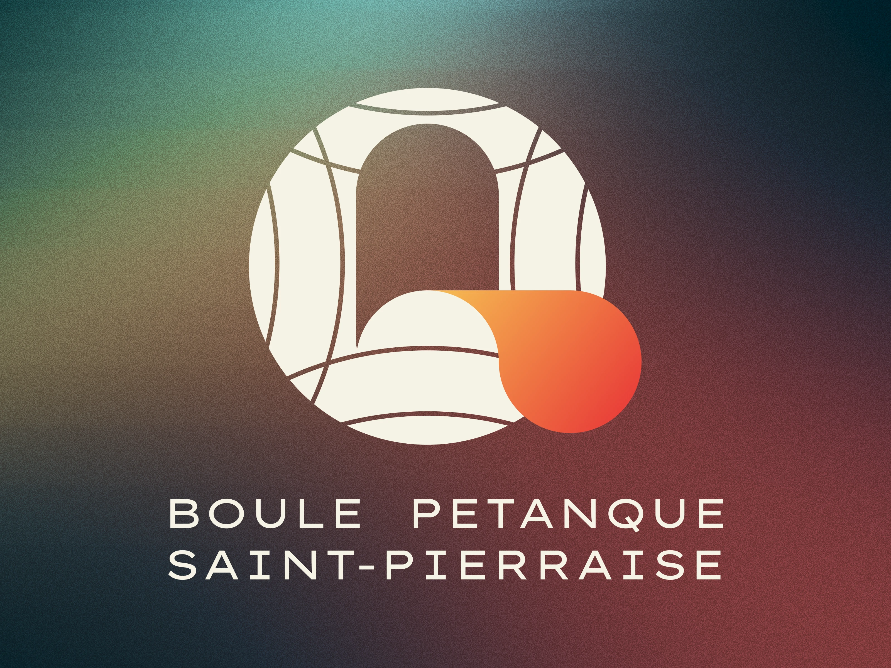
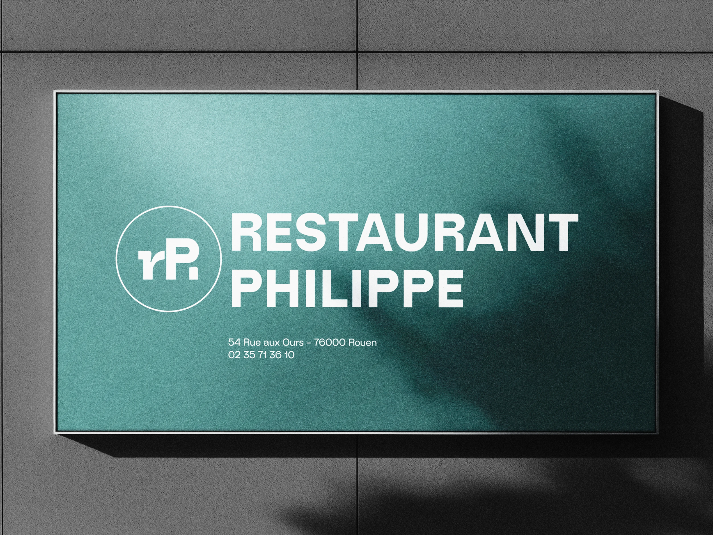

Design is empathy in motion.
Design is empathy in motion.
Building high-end digital identities and scalable UX that earn trust before a word is spoken.
[ Available for new projects ]
+ Various experiments and design snippets — available on my Instagram
[ Sector: Enterprise UX ]
Tens of thousands of people used this software every day. Nobody had asked them what they actually needed.

[ Sofia platform, SGS — 2023–2025 ]
Sofia is SGS's global enterprise platform, used by over 30,000 people across 40 countries. When I joined, it had grown faster than its design had — functional, but fractured.
Over two years, I rebuilt it from the inside out. Every screen audited. Every interaction reconsidered. The work spanned UX research, information architecture, component design, and final UI delivery — with no handoff gaps, because there was only one designer.
The redesigned Sofia shipped to a global rollout without a single major regression in user feedback. For a platform at that scale, that's not a given — it's the result of two years of not cutting corners.
[ Sector: Software ]
A brand that hears what others miss.
[ SONAR — Brand Design, 2025 ]
SONAR is built around precision detection — the ability to read what's beneath the surface. Where others see noise, SONAR finds signal. A brand for those who listen differently.
[ Brand Identity ]
Vantage sources high-end vehicles from across Europe for clients in Normandy — privately, precisely, without the dealership experience. They needed a brand that felt as considered as their service.
I built their identity from scratch: naming direction, logo, colour system, and visual language. The brief was trust before a word is spoken.
Brand live — currently sourcing clients across Normandy
[ Personal — Ongoing ]

A motorsports news and calendar site I run because I wanted to build something for an audience I'm already part of. Design, content, and code — all mine.
Growing audience — built entirely in personal time

[ Association de Petanque ]
[ Restaurant Philippe ]"The goal of a designer is to listen, observe, understand, sympathize, empathize, synthesize, and glean insights that enable him or her to 'make the invisible visible.'"
— Hillman Curtis
Auditing friction points and defining the business case before a single pixel is moved.
Building scalable design systems through high-fidelity prototyping and constant feedback loops.
Delivering developer-ready documentation and brand guidelines designed for long-term growth.
[ Sector: Studio ]
I believe the best design doesn't just look right — it feels right, because it started with listening.
I work with founders and small teams who want a brand or product that earns trust before a word is spoken. I bring the same rigour to a one-person startup as I brought to a platform used by 30,000 people daily.
Based in Normandy. Working worldwide.
Ready to build something that feels as good as it looks? Book a 15-minute intro call to discuss your project.
Let's work together →[ Available for brand identity, web design, and creative direction ]
[ Usually responds within 24 hours ]
Now booking for June 2026